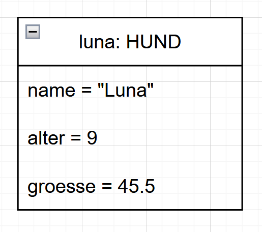

Überblick › LB 4/5 OOP und Softwareentwicklung
4.2 Objektorientiertes Denken – vor dem Code
Bevor wir anfangen zu programmieren, lohnt sich ein Perspektivwechsel. Statt „Was muss der Computer tun?“ fragen wir: „Welche Dinge (Objekte) gibt es in meinem Problem – und wie hängen sie zusammen?“
Objektorientiertes Denken bedeutet, die Welt in Objekte mit Eigenschaften und Fähigkeiten zu zerlegen. Du überlegst, welche Dinge es gibt, welche Eigenschaften sie haben (Attribute) und was sie tun können (Methoden).
Schritt 1: Was ist ein Objekt?
Ein Objekt ist ein konkretes Ding – wie ein Ball, ein Schüler oder ein Auto. Es hat:
- Attribute → Daten, z. B. Farbe, Name, Geschwindigkeit
- Methoden → Aktionen, z. B.
springen(),sprechen(),bremsen()
Die UML (Unified Modeling Language) ist eine grafische Modellierungssprache für objektorientierte Systeme. Ein Objektdiagramm zeigt ein konkretes Objekt mit seinen aktuellen Attributwerten. Der Kopf enthält unterstrichen objektname : Klasse.
Im Video wird aus der Hündin Luna ein Objektdiagramm. Achte darauf, was im Kopf steht, was darunter steht – und was nicht im Objektdiagramm vorkommt.
Zum Nachlesen: Ein Objekt vom Typ „Hund“ könnte z. B. so aussehen:

Kurz geprüft 1: Eine Trinkflasche als Objekt AFB I
Pauls Trinkflasche ist blau, fasst 0,75 l und enthält gerade 0,4 l Wasser. Gib das Objektdiagramm an (Kopf und Attribute mit Werten).
Lösung zeigen
Kopf (unterstrichen): flasche : Trinkflasche. Attribute: farbe = "blau", volumen = 0.75, fuellstand = 0.4. Methoden wie trinken() oder auffuellen() stehen nicht im Objektdiagramm. Paul kann als Attribut besitzer = "Paul" vorkommen oder als eigenes Objekt modelliert werden.
Weiter mit Schritt 2: Zustand und Verhalten →
Schritt 2: Zustand und Verhalten
Attribute: Was weiß ein Objekt?
Attribute sind die Daten, die in einem Objekt gespeichert sind. Beim Objekt „Luna“ sind das z. B. der Name, das Alter und die Größe.
Methoden: Was kann ein Objekt tun?
Methoden sind Funktionen, die zu einem Objekt gehören und auf ihm ausgeführt werden. Ein Objekt „Hund“ könnte z. B. eine Methode bellen() oder wachsen() besitzen.
Hinweis: Was ist der Unterschied zwischen Attribut und Methode?
Ein Attribut speichert Daten, z. B. alter = 17.
Eine Methode führt eine Aktion aus, z. B. zeige_profil().
Methoden können Attribute lesen oder verändern – ähnlich wie Verben in einem Satz. Attribute entsprechen eher den Substantiven und Adjektiven.
Im Video schaltet und bremst Lea mit fahrrad1. Achte darauf, welches Attribut sich bei welcher Botschaft ändert und welches gleich bleibt.
Zum Nachlesen steht das Fahrrad-Beispiel aus dem Video ausführlich in Beispiel 1:
Kurz geprüft 2: Die Flurlampe AFB I
Für das Objekt lampe1 : Lampe gibt es: helligkeit, einschalten, farbe, dimmen(prozent). Was davon sind Attribute, was Methoden? Welches Attribut ändert die Botschaft lampe1.dimmen(50), welches bleibt gleich?
Lösung zeigen
Attribute: helligkeit, farbe. Methoden: einschalten(), dimmen(prozent). lampe1.dimmen(50) ändert die helligkeit (auf 50 %), die farbe bleibt gleich. Das Objekt bleibt dasselbe, nur sein Zustand ändert sich.
Danach: Aufgabe 4.2.1 – Attribut oder Methode?
Weiter mit Schritt 3: Objekte schicken sich Botschaften →
Schritt 3: Objekte schicken sich Botschaften
In einem OOP-System arbeiten viele Objekte zusammen. Ein Objekt kann ein anderes „anstoßen“, indem es eine seiner Methoden aufruft.
Beispiel: Das Objekt wecker ruft schueler.aufstehen() auf.
Im Video meldet Leas Smartwatch dem Handy einen neuen Schritt-Rekord. Achte darauf, welches Objekt welchen Zustand ändert – und warum die Uhr nicht direkt in die Liste des Handys schreibt.
Zum Nachlesen steht der Ablauf aus dem Video in Beispiel 2:
Kapselung: Zugriff steuern
Ein Objekt sollte nur über seine Methoden benutzt werden. Die internen Details (Attribute) bleiben verborgen – das nennt man Kapselung (siehe 4.6).
Hinweis: Warum ist Kapselung wichtig?
Wenn du die inneren Daten eines Objekts schützt, kannst du leichter Fehler vermeiden und später Dinge ändern, ohne dass andere Teile deines Programms nicht mehr funktionieren.
Kurz geprüft 3: Ein anderer Tag AFB I
Am nächsten Tag steht die Uhr auf schritte = 9 300, der Rekord ist inzwischen rekord = 12 481, die Liste des Handys ist leer. Die Uhr zählt einen Schritt. Welche Botschaften werden verschickt, und welche Werte haben danach schritte, rekord und benachrichtigungen?
Lösung zeigen
Nur uhr.schritt_zaehlen(): schritte wird 9 301. Die Prüfung 9 301 > 12 481 ist falsch, also bleibt rekord = 12 481 und es wird keine Botschaft an das Handy geschickt; benachrichtigungen bleibt [].
Danach: Aufgabe 4.2.2 – Denk in Objekten.
Praxisbezug: Objektorientierte Analyse
Alltag: Auch ohne Programmierung denkst du objektorientiert: Dein Smartphone „weiß“ seinen Akkustand (Attribut) und „kann“ Fotos aufnehmen (Methode).
Beruf: Bevor in einem Softwareprojekt programmiert wird, führen Softwarearchitektinnen und Business-Analysten eine objektorientierte Analyse durch: In Gesprächen mit dem Kunden – etwa einer Stadtverwaltung, die ein Online-Terminsystem möchte – sammeln sie die wichtigen Objekte (Bürger, Termin, Sachbearbeiterin) und zeichnen sie als UML-Diagramme. Diese Diagramme sind die gemeinsame Sprache zwischen Kunde und Entwicklungsteam.
Zusammenfassung
Ein Objekt ist ein eindeutiges Ding mit Attributen (Daten) und Methoden (Fähigkeiten). Die aktuellen Attributwerte bilden seinen Zustand; das Objektdiagramm zeigt genau diesen Zustand mit dem unterstrichenen Kopf objektname : Klasse. Objekte arbeiten zusammen, indem sie sich Botschaften schicken, also Methoden anderer Objekte aufrufen. Jedes Objekt ändert dabei nur seinen eigenen Zustand.
Das Wichtigste
Objekt: Eine eindeutig identifizierbare Einheit mit einem Zustand und einem Verhalten.
Zustand: Die aktuellen Werte der Attribute (Eigenschaften) des Objekts.
Verhalten: Die Methoden (Fähigkeiten) des Objekts.
Botschaften: Objekte arbeiten zusammen, indem sie sich Botschaften schicken, also Methoden aufrufen.
Grundaufgaben
Aufgabe 4.2.1: Attribut oder Methode? AFB I
Ordne für ein Objekt „Smartphone“ zu: Akkustand, anrufen, Hersteller, Foto aufnehmen, Speicherplatz, lauter stellen, Lautstärke.
Aufgabe 4.2.2: Denk in Objekten AFB II
Suche dir ein System aus deinem Alltag aus (z. B. Schule, Fahrrad, Smartwatch). Überlege:
- Welche Objekte gibt es?
- Was sind deren Attribute?
- Welche Methoden könnten sie haben?
- Welche Objekte schicken sich Botschaften?
Zeichne für zwei Objekte ein Objektdiagramm oder schreibe eine Liste.
Das kann ich jetzt
Grau steht, was der Lehrplan verlangt, darunter, was das für dieses Thema konkret heißt. Hake einen Punkt ab, wenn er in deinem Hefter zusammengefasst ist und du ihn ohne Hilfe kannst. Wie du ihn zusammenfasst, entscheidest du selbst. Die Haken speichert nur dein Browser.
Lehrplan LB 4 Klasse und Objekt (Kennen von Begriffen der objektorientierten Programmierung)
Lehrplan LB 4 Attribut und Attributwert (Kennen von Begriffen der objektorientierten Programmierung)